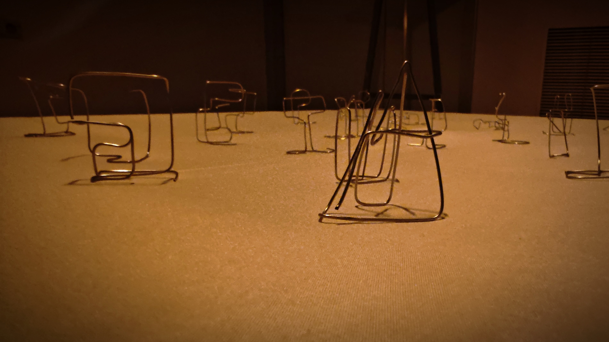
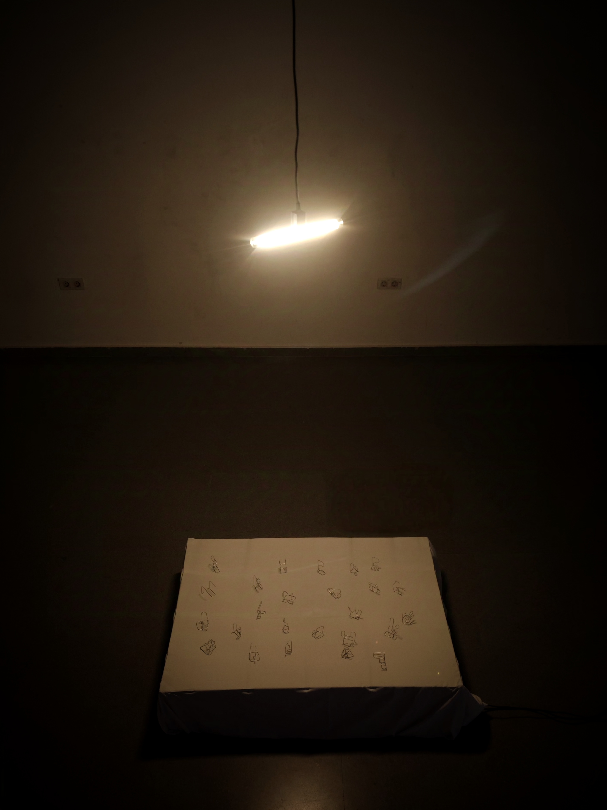
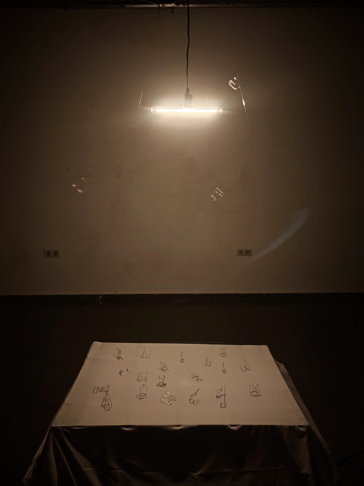
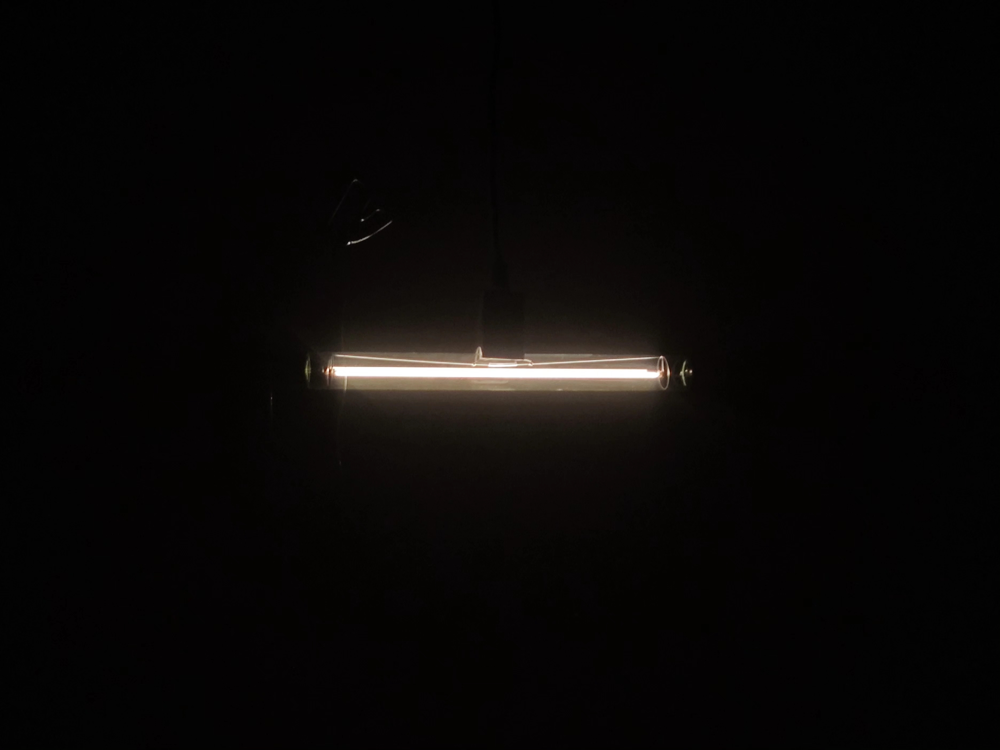
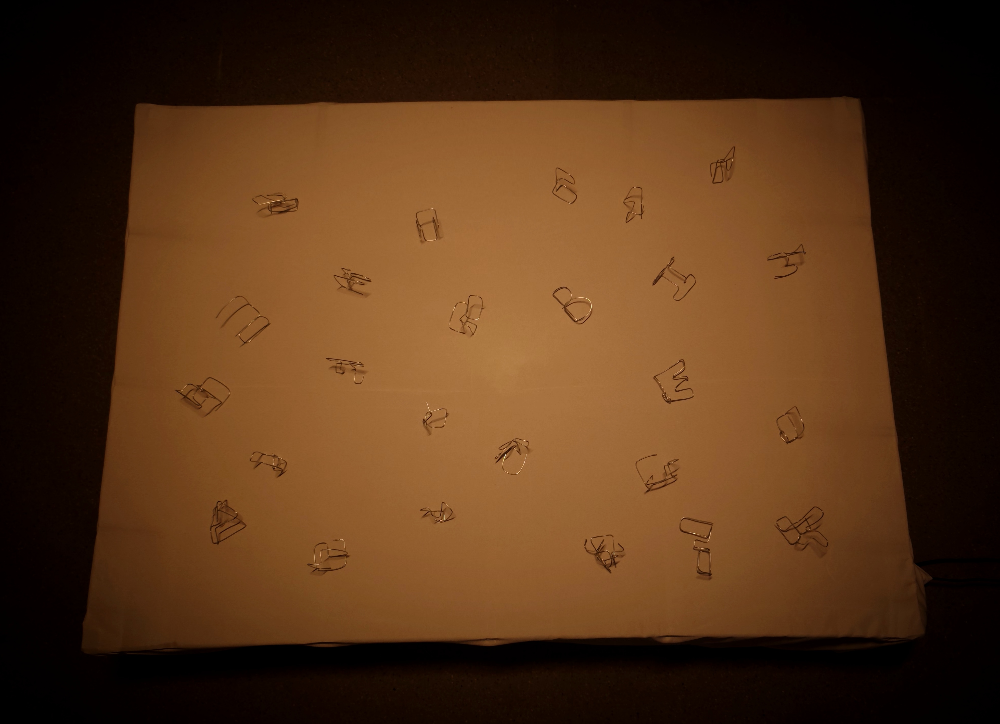

Columpio de Sombras desarrolla una instalación basada en esculturas tipográficas y en la relación entre escritura, espacio y luz.
Las letras se presentan como pequeñas estructuras tridimensionales distribuidas en el suelo y activadas dentro de una composición lumínica. La pieza combina una dimensión escultórica con un sistema electrónico integrado, haciendo visible la tensión entre signo, objeto y entorno expositivo.
Realizado en colaboración con Geovannys Rafael Balbera Pertuz, el proyecto articula montaje espacial, electrónica y presencia física para convertir la tipografía en una experiencia instalativa sensible.




